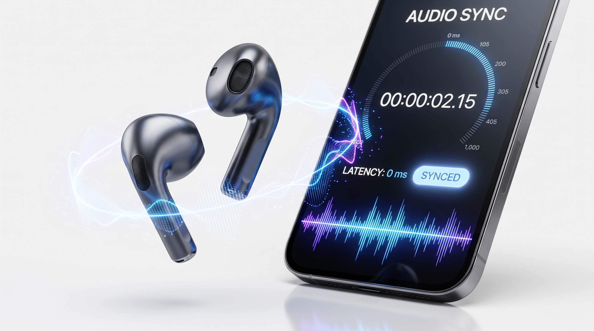
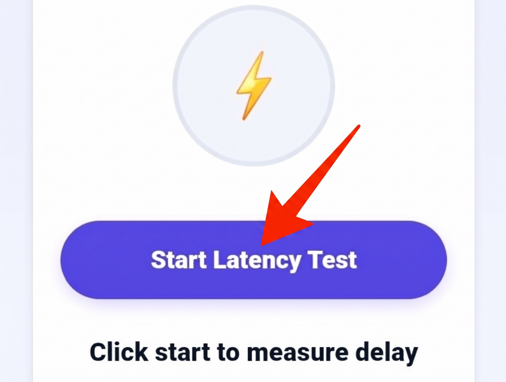

Audio Latency Tester
Measure digital audio buffer delay and Bluetooth headphone output lag in milliseconds. Diagnose lip-sync issues and gaming latency directly in your browser.
⚡
Click start to measure delay
Measure digital audio buffer delay and Bluetooth headphone output lag in milliseconds. Diagnose lip-sync issues and gaming latency directly in your browser.
Directly measures hardware buffer roundtrip intervals via browser audio context threads.
Benchmark latency differences across SBC, AAC, aptX, and low-latency gaming codecs.
Pure client-side execution; zero microphone tracking, analytics, or remote network calls.
Identify hardware bottlenecks before playing competitive shooters or editing audio.

In digital computing, sound playback is never truly instantaneous. Whenever an application triggers a sound effect, video soundtrack, or musical note, that digital command must navigate a complex software and hardware pipeline. The audio data is segmented into small buffers, processed by operating system audio engines (such as Windows WASAPI, macOS CoreAudio, or Android AAudio), routed through digital-to-analog converters (DACs), amplified, and physically pushed through headphone speaker diaphragms. The cumulative time delay required for this entire roundtrip is known as audio latency, measured in milliseconds (ms).
While a wired 3.5mm analog connection delivers near-instantaneous transmission with less than 5 to 10 ms of total latency, wireless audio introduces an entirely new layer of digital overhead. When using Bluetooth earbuds, the uncompressed digital stream must be compressed by a software codec, packetized into radio frequency bursts, transmitted across the 2.4 GHz spectrum, received by the earbud chip, reassembled, decoded, and converted to analog audio. The MiMusic Audio Latency Tester evaluates this hardware-software pipeline directly in your browser using the native Web Audio API, calculating audio context output latency so you can quantify playback delays.
Follow these three steps to diagnose output latency on desktop or mobile:

Connect your target headphones, click Start Latency Test, and review measured buffer timing.
Pair your wireless Bluetooth earbuds, or plug in your wired 3.5mm/USB-C headphones to evaluate your target playback setup.
Click "Start Latency Test". The tool synthesizes a pure 440 Hz pulse while polling browser audio output bus properties.
Review measured millisecond delay: under 50 ms indicates lightning-fast response; over 150 ms indicates wireless buffer lag.
The primary driver of wireless lag is your device's active codec: baseline SBC typically hovers around 150–250 ms; AAC delivers high audio fidelity but often incurs 200 ms latency on Android; aptX Low Latency slashes delay to 35–40 ms; while high-res LDAC operates around 150–200 ms.
International broadcast standards (ITU) establish that audio can lag behind video by +45 ms to +100 ms before viewers perceive noticeable lip-sync mismatch. However, in fast-paced mobile gaming, a 200 ms delay means you hear footsteps or shots a fifth of a second late, destroying competitive reaction times.
If your benchmark test reveals elevated delay numbers, try these quick optimization protocols:
For casual music listening, latency is irrelevant. For video streaming, latency under 100 ms is perfectly synchronized due to automatic media player offset compensation. For competitive mobile gaming and instrument monitoring, latency must remain under 40 ms to feel responsive.
Modern video apps like YouTube and Netflix automatically delay video playback frames by the exact latency reported by your Bluetooth headphones. However, this compensatory trick only works for pre-recorded media; it cannot be applied to real-time interactive games or live voice chats.
Our tool queries the browser's native Web Audio API `AudioContext.outputLatency` and `baseLatency` properties, which calculate the estimated round-trip delay between the browser thread, operating system audio mixing buffers, and output hardware driver.
Yes. Earbud firmware updates frequently optimize transmission buffer handling. Furthermore, newer standards like Bluetooth 5.2, 5.3, and Bluetooth LE Audio (LC3 codec) offer substantial structural latency reductions over older Bluetooth 4.2 protocols.